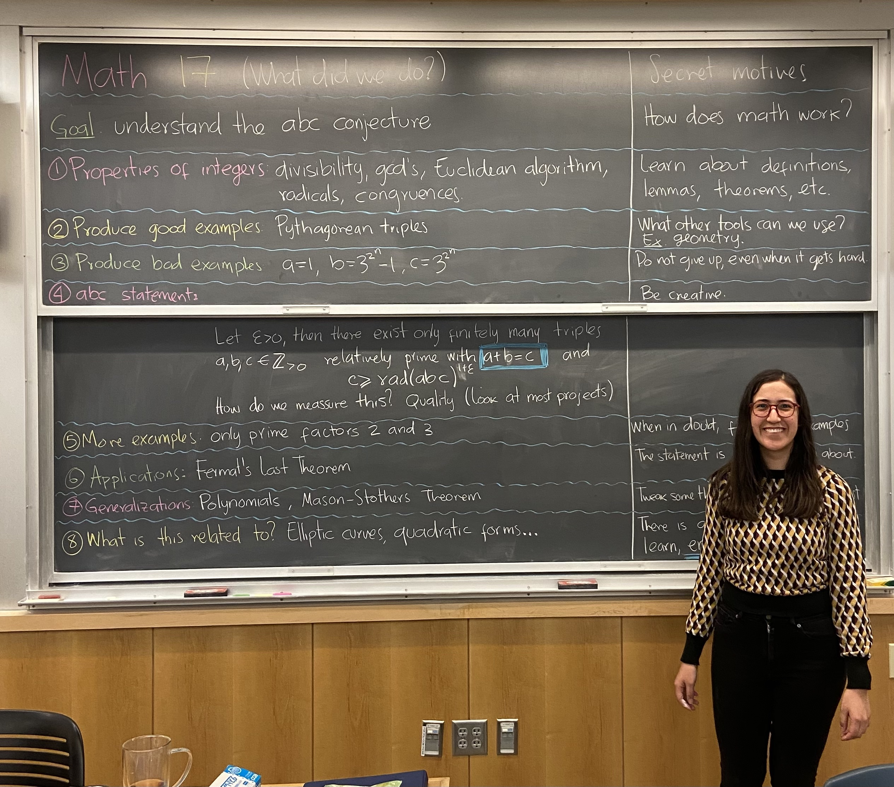

Current
I am not teaching this term.
Next term, I will be teaching Math 17: Introduction to Mathematics Beyond Calculus. The topic will be the abc conjecture.
Past
Math 1 - Introduction to Calculus, Dartmouth College, Fall 2021.
Math 369 - Linear Algebra, Colorado State University, Summer 2019.
Math 160 - Calculus for Physical Scientists I, Colorado State University, Spring 2019.
Math 161 - Calculus for Physical Scientists II, Colorado State University, Fall 2018.
Math 261 - Calculus for Physical Scientists III, Colorado State University, Summer 2018.
Mentoring
Preliminary Arizona Winter School 2022: Heights and Model Theory (PAWS): teaching assistant, Fall 2022.
Directed reading program: Elliptic Curves, Winter 2021.
Directed reading program: Introduction to Algebraic Geometry, Winter 2020.
Other
Assistant director at PACe (Paced Algebra to Calculus electronically), Fall 2019 - Summer 2020.
